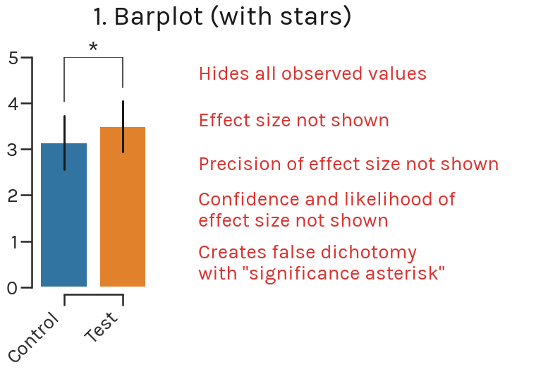
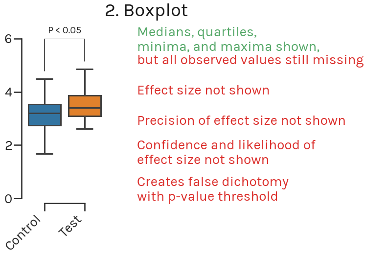
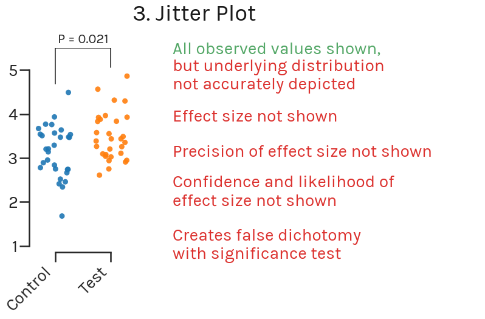
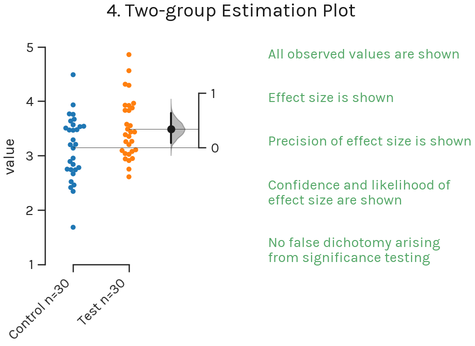
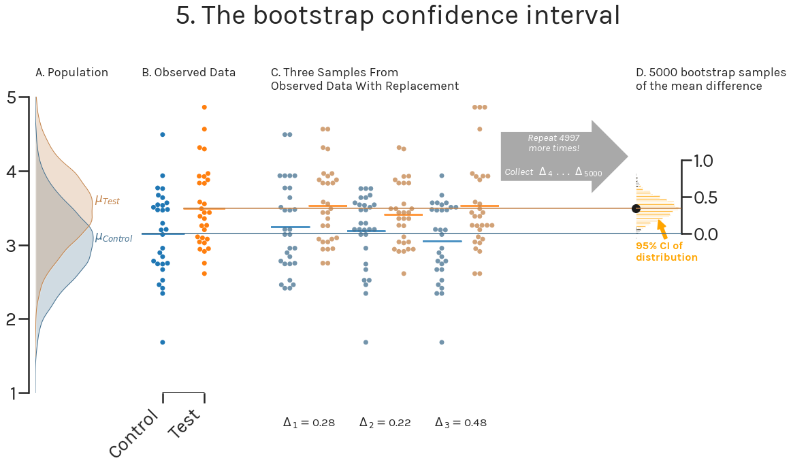
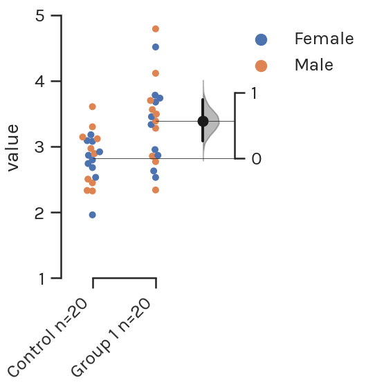
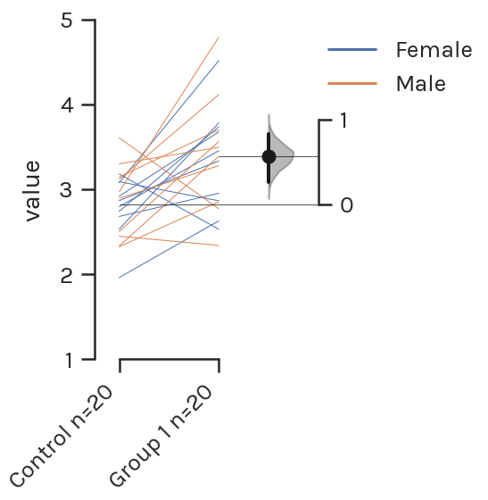
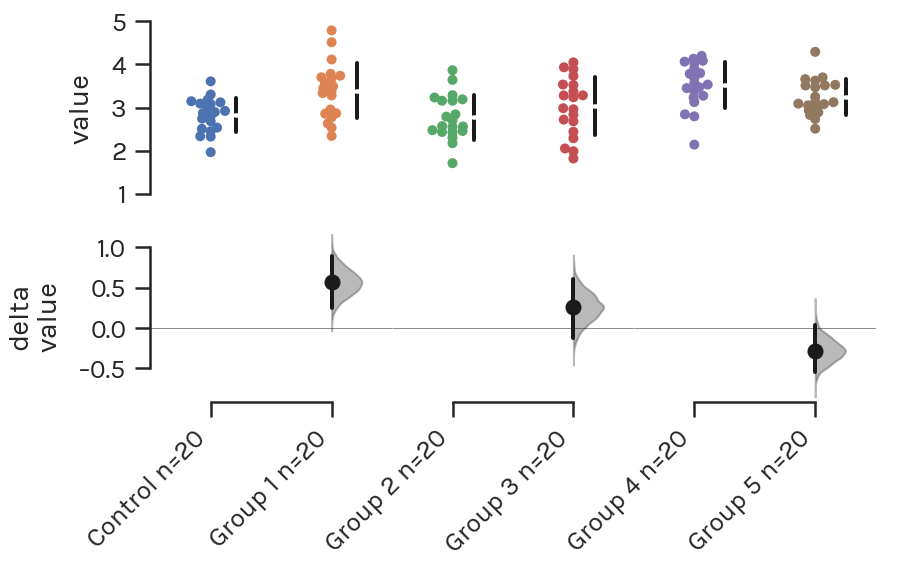
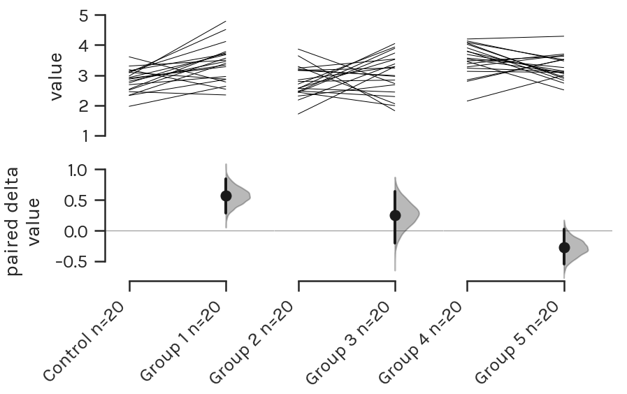
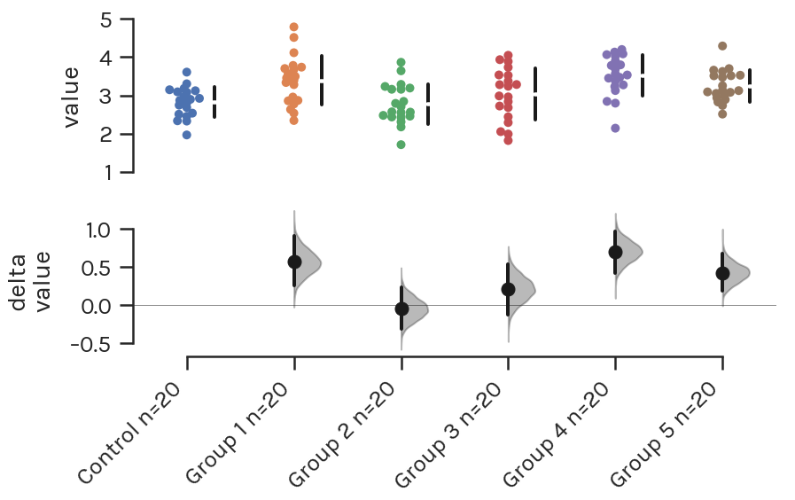

Background¶
DABEST provides you with plots from an estimation statistics paradigm. You may have found significance testing and P values problematic; you may be asking what comes next.
Estimation statistics > P Values¶
Estimation statistics is a simple framework that—while avoiding the pitfalls of significance testing—uses familiar statistical concepts: means, mean differences, and error bars. More importantly, it focuses on the effect size of one’s experiment/intervention, as opposed to significance testing.
Significance testing calculates the probability (the P-value) that the experimental data would be observed, if the intervention did not produce a change in the metric measured (i.e. the null hypothesis). This leads analysts to apply a false dichotomy on the experimental intervention.
Estimation statistics, on the other hand, focuses on the magnitude of the effect (the effect size) and its precision. This encourages analysts to gain a deeper understanding of the metrics used, and how they relate to the natural processes being studied.
The Inadequacy of Common Plots¶
Let’s say we have performed an experiment with 30 control subjects, and 30 test subjects. We begin our data analysis by making a barplot of the data.
The barplot has several shortcomings, despite enjoying widespread usage in academic journals. We’re not the first ones (see this, this, or that) to point out the myriad flaws with the barplot. Importantly, the barplot does not show us the effect size.
Instead, we can use a boxplot to visualize the data.
Unfortunately, the boxplot still doesn’t show all our data. We still lack information about the underlying distribution of your data. Is it normally distributed? Is there skew in the points? What is the sample size? More importantly, boxplots do not display the effect size.
To display several data points across one or more categories, we can use the jitter plot.
Jitter plots avoid overlapping datapoints (i.e. datapoints with the same y-value) by adding a random factor to each point along the orthogonal x-axes. Thus, while a jitter plot displays all datapoints (implicitly indicating the sample size visually), it might not accurately depict the underlying distribution of the data.
Introducing the Estimation Plot¶
An estimation plot has two key features. Firstly, it presents all datapoints as a swarmplot, which orders each point to display the underlying distribution. Secondly, an estimation plot presents the effect size as a bootstrap 95% confidence interval on a separate but aligned axes.
We illustrate how bootstrap confidence intervals are generated below.
In a typical scientific experiment, we are attempting to estimate the mean difference between two populations: µControl and µTest (Figure 5A). We go about this by obtaining samples from the control population and from the test population (Figure 5B). We can easily compute the mean difference in our observed sample (Δ).
But how do we obtain a measure of precision and confidence about our observed mean difference, and also get a sense of the population mean difference?
We can calculate the 95% confidence interval (95% CI) of the mean difference by resampling from our observed data several times (Figure 5C). With computers, we can perform 5000 resamples very easily. The mean difference for each of these resamples is calculated. According to the Central Limit Theorem, these 5000 resampled mean differences are normally distributed, allowing easy derivation of a 95% CI of the mean difference (Figure 5D).
An added benefit of bootstrap confidence intervals is that we do not need to assume that the population from which our samples come from have a normal distribution.
The “95%” of the confidence interval refers to the proportion of confidence intervals that would contain the population mean, if samples from the population were repeatedly obtained, and confidence intervals obtained for each sample. That is to say, we can be 95% confident the interval contains the true mean of the population.
The estimation plot presents Figure 5B and Figure 5D side-by-side as a single integrated plot. It thus tightly couples visual presentation of the raw data with an indication of the population mean difference, and its confidence interval.
A plot for every type of data¶
For each of the most routine significance tests, there is an estimation replacement:
Unpaired Student’s t-test → Two-group estimation plot
Paired Student’s t-test → Paired estimation plot
One-way ANOVA + multiple comparisons → Multi two-group estimation plot
Repeated measures ANOVA → Multi paired estimation plot
Ordered groups ANOVA → Shared-control estimation plot
All of these plots enable you to graphically inspect the mean difference and its confidence interval. When there are multiple groups, the side-by-side plotting allows the visual comparison of effect sizes.
Relative to conventional plots, estimation plots offer five key benefits:
| Barplot | Boxplot | Jitter | Estimation Plot | |
|---|---|---|---|---|
| Displays all observed values | ✘ | ✘ | ✘ | ✔ |
| Displays effect size | ✘ | ✘ | ✘ | ✔ |
| Visualizes estimate precision | ✘ | ✘ | ✘ | ✔ |
| Shows mean difference likelihood | ✘ | ✘ | ✘ | ✔ |
| Avoids false dichotomy | ✘ | ✘ | ✘ | ✔ |
To our knowledge, mean difference estimation plots were first described by Martin Gardner and Douglas Altman (Gardner and Altman 1986), while the multiple-comparison design was devised by Geoff Cumming (Cumming 2012).